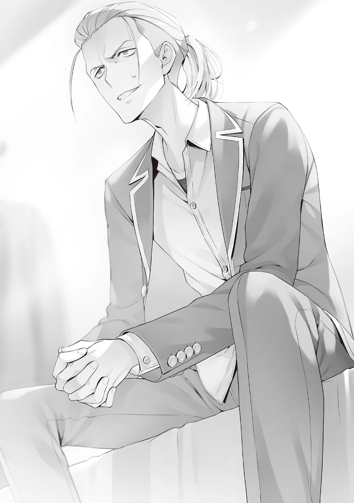

Oryantasyon toplantısından ve Horikita ile okula giderkenki yolculuğumdan biraz geriye saralım.
Her şey, oryantasyon toplantısı başlamadan kısa bir süre önce Hashimoto’nun yardım istemek için odama gelmesiyle başlamıştı.
Hashimoto neden bu görünüşte pervasız ihanet eylemini gerçekleştirmişti? O anda neden böyle bir risk almıştı? Olayın ayrıntıları, ilgili kişi tarafından bizzat açıklandı.
“…Bundan sonrasında ne olacağını söylemeden önce, gerçekten teyit etmem gereken bir şey var.”
Hashimoto’nun böyle bir kararı verebilmesi için müthiş bir cesarete sahip olması gerekiyordu. Onun teyit etmek istediği şey, o anda ne kadar bilgiye sahip olduğumdu. Bu, onun gözünden kaçırmayacağı önemli bir faktördü.
“Bir önceki sınavdan önce bile, Ryuen’in ihanetine ortak olma isteği duyuyordum. Sadece geçici bir iş birliği değil; bu temele dayanarak bir sınıf değişikliği yapmak istemiştim.”
Bu barizdi ancak A sınıfındaki Hashimoto’nun, Ryuen’in sınıfına geçmesinin hiçbir değeri yoktu. Yerini kaybeden Katsuragi gibilerin durumları hariç, bir süre öncesine bakacak olursanız A Sınıfı, mevcut durumundan çok daha istikrarlı bir konuma ulaşmış olmalıydı.
“Elbette böyle bir daveti başta ciddiye almadım. Ancak hemen ardından Ryuen, sınıf değiştirmezsem yılın sonunda kesinlikle büyük bir pişmanlık yaşayacağımı belirtti.”
“Pişmanlık mı? Böyle söylemesinin sebebi kendisinin kazanacağından emin olmasından mı kaynaklanıyor?”
“Görünüşe göre Ryuen ile Sakayanagi’nin üzerinde anlaştıkları bahsin içeriğini sen bile bilmiyorsun.”
“Bahis mi? Geçerli olup olmadığını bilmiyorum ancak son ıssız ada sınavında takas hakkında bir şeyler duymuştum. Ne yazık ki detayları bilmiyorum.”
Bildiklerimi ona anlattıktan sonra, sanki önceden doğrulamak istediği şeyin bu olduğunu kanıtlamak istercesine Hashimoto parmaklarını şıklattı.
“Sevindim. Demek buraya gelmemin bir sebebi varmış.”
Hikâyenin kilit noktalarının uyuştuğunu kabul eden Hashimoto, dudaklarının kenarlarını hafifçe yukarı kıvırarak gülümsedi. Ardından ikisinin yaptığı bahsin detaylarını açıkladı.
“İlk duyduğumda şaka sanmıştım ancak ciddi bir şeymiş.”
“Anlıyorum. Demek ki hayatta kalma ve eleme özel sınavı sırasında onlara ihanet etmek için geçerli bir sebebin varmış.”
O noktada bunun anlık bir fikir olmadığı açıktı.
“Bahsin kendisinden şüphe duymak mantıksız değil, değil mi? Ne açıdan bakarsan bak, Sakayanagi dezavantajlı durumda.”
“Bu doğru. Ancak Sakayanagi, sırf dezavantajda diye bahsi reddetmeyi seçmezdi.”
Sakayanagi tıpkı Ryuen gibi, en ufak bir şüphe duymadan kazanacağına inanan türden biriydi.

Hashimoto taşan duygularını bastıramayarak öne eğilip sordu:
“Sakayanagi’nin öylece pes ettiğini mi düşünüyorsun, yoksa belirli şartlar mı konulmuştu?”
“İkisi de mümkün ancak eninde sonunda bahsin detayları ortaya çıkacaktır. Bunu göz önünde bulundurursak ikincisi olmalı. Ryuen’in özel puanlar biriktirmesi için ona zaman tanımış olmalı.”
“Güzel. Bu hızlı oldu. Evet, eğer durum buysa manevra alanı oldukça geniş.”
“Bu bahsi sen ve ilgili kişiler dışında başka kim biliyor?”
“Eğer Ryuen yalan söylemediyse, hiç kimse. Sen dördüncüsün. Şey, her ikisi de bahsin sızdırılması sebebiyle kaybetmekten nefret eder.”
Bu tahmin muhtemelen doğruydu. Her şey doğrulandıktan sonra durumu kamuoyuna açıklamak daha iyi olurdu. Ryuen’in bahsi sızdırdığı tek kişi Hashimoto’ydu ancak bu da hatırı sayılır bir risk demekti. Eğer bu sızdırma olayı ıssız ada sınavının sonlarına yakın bir zamanda yaşanmışsa, o zamandan beri neredeyse yarım yıl geçmiş demekti.
“Bugünün gelmesi… biraz zaman aldı.”
Sırrı saklayan Hashimoto yalnız başına endişeleniyordu.
“Sakayanagi mi kazanır yoksa Ryuen mi, açıkçası bir sonuca varamadım… Hayır, Sakayanagi’nin kazanabileceğini düşünüyordum.”
Sanki bir anlığına yalan söylemiş gibi Hashimoto kendini düzeltti.
“Ama yine de oran 55’e 45 gibi. Cidden, hiç belirleyici değil, değil mi?”
Katılıyordum. Dokuza bir ya da en kötü ihtimalle yediye üç olmadığı sürece, bir maçın nereye gideceğini tahmin edemezdiniz.
“Bu yüzden belirleyici bir faktör aradım ve bunun ne olabileceğini düşündüm—”
Yavaşça, Hashimoto’nun bakışları bana döndü.
“Ben mi?”
“Eğer Sakayanagi’yi takip etseydin, mevcut sınıfımla tereddüt etmeden ölmeye hazır olurdum. Bu yüzden Sakayanagi’ye… seni müttefik olarak görmesi için tavsiyede bulundum.”
Ve Sakayanagi reddetti. O zaman Hashimoto onlara ihanet etmeye mi karar vermişti…?
Mantıklı gibi gözükse de özünde hâlâ belirsizdi. Sakayanagi ve Ryuen arasındaki çatışmanın sonucunun tahmin edilemez olduğunu anlamıştım. Benim de katılmam halinde Sakayanagi’nin kazanabileceğini düşündüğünü anlamıştım. Ancak bu, durumun çok pervasızca olduğu gerçeğini değiştirmiyordu.
“Ryuen’in kazanmasını sağlayacağım. Yıl sonu özel sınavının içeriği ne olursa olsun, onlara sonuna kadar yardım edeceğim. Eğer bu fırsatı kaçırırsam, büyük ihtimalle ortadan kaybolan kişi ben olacağım.”
Elbette Sakayanagi, Hashimoto’ya karşı tetikte olacak ve hiçbir bilgi paylaşmayacaktı. Ancak sınıfta kesinleşmiş bir hain varsa, bu kaçınılmaz olarak bir dezavantaj oluştururdu. Eğer sınıfın toplam puanları sonucu belirleyen şey olursa, Hashimoto’nun kasten sıfır puan alması zor bir durum olurdu.
“Eğer Sakayanagi talimatlarımı dinleseydi, ister önceki özel sınavda ona ihanet etmemden önce ister sonra olsun, Ryuen’e ihanet edip ona katılmazdım.”
Çok kararlı konuşuyordu ancak söylediklerinin ne kadarının doğru olduğundan emin değildim. Şu anda emin olabileceğim tek şey, söylediği her şeyin belirsiz olduğuydu.
“Ryuen’in kazanmasını sağlamak istiyorsan sorun yok ancak Sakayanagi’ye teklif ettiğin şeyin aynısını Ryuen’e de mi teklif ettin?”
“Seni kendi sınıfına almaktan mı bahsediyorsun? Elbette. Ancak cevap Sakayanagi’ninki ile aynıydı, sadece bir şart vardı: Eğer Sakayanagi’yi yıl sonu özel sınavında yenebilirsek, ikimizi de kendi sınıfına alacak.”
Ryuen cidden bunu söylemiş miydi? Geçmişe bakınca Ryuen de tıpkı Sakayanagi gibiydi. Onun, beni de yanına alarak kazanmaya çalışacak bir tip olmadığı barizdi. Ayrıca farklı sınıflardan iki öğrenciyi kendi sınıfına almak için tam 40 milyon kişisel puan gerekiyordu.
Ryuen’in sığ yalanı Hashimoto’yu kandırmış mıydı?
Hayır—muhtemelen öyle değildi. Hashimoto tüm gerçeği söylemiyordu. Eğer ben Hashimoto olsaydım, pervasız ihanetim için kesinlikle bir güvenlik ağı kurardım. Sadece Ayanokoji Kiyotaka’nın aklımda olan sınıfa geçme ihtimaline dayanarak ihanet etmeye karar vermezdim.
Sakayanagi’ye ihanet etmenin ödülünün muazzam olmaması garip olurdu. Transfer için 20 milyon kişisel puan… Mantıklı olan buydu. Yıl sonu özel sınavında Sakayanagi’nin kaybetmesine yardım eder ve tüm başarıyı üstlenirse, Ryuen’den bu ayrıcalığı elde ederdi. Bu durum, ihanetin bedeline rağmen mücadeleyi değerli kılardı. Ryuen o büyük miktarı hemen hazırlayamasa bile, her ay sınıfa gelen özel puanları toplayarak mezuniyete kadar ödemeyi yapabilirdi.
Günün sonunda, Hashimoto için hangi sınıfın kazandığının ya da benim nerede olduğumun gerçekten bir önemi yoktu. A sınıfının bir parçası olabildiği sürece, bu Hashimoto’nun zaferiydi. Her şey onun kendi çıkarı içindi. Bu, zihninde simüle ettiği kalıplara dayanarak seçtiği cevaptı.
Hashimoto, hayatta kalma ve eleme özel sınavında sınıfa ihanet ederek Sakayanagi’nin gerçek niyetini doğrulamıştı. Eğer Sakayanagi beni sınıfına kabul etseydim her şey daha kolay olurdu. Bütün sınıf arkadaşlarından kişisel puan toplarsa, kolayca 20 milyon kişisel puana ulaşma ihtimali yüksekti. Eğer sınıf değişikliğini kabul etseydim Hashimoto; ben ve Sakayanagi gibi iki ana oyuncunun yanında savaşmayı seçerdi.
Eğer reddedilirse, Ryuen ile gizli bir anlaşma yapıp 20 milyon özel puan kazanabilirdi. Ancak, A sınıfından mezun olmak gibi bir avantaja sahip olduğunda bile, ihaneti nedeniyle okuldan atılma riskinden kurtulamazdı. Sadece Sakayanagi’nin düşmanı olmakla kalmaz, üçüncü tarafların da hedefi hâline gelirdi.
Bana yaklaşmasının ve ihanetin detaylarını anlatmasının nedeni tamamen kendi çıkarıydı.
“Benden ne istiyorsun?”
Sorumu sorduğum an, Hashimoto gergince gülümsedi.